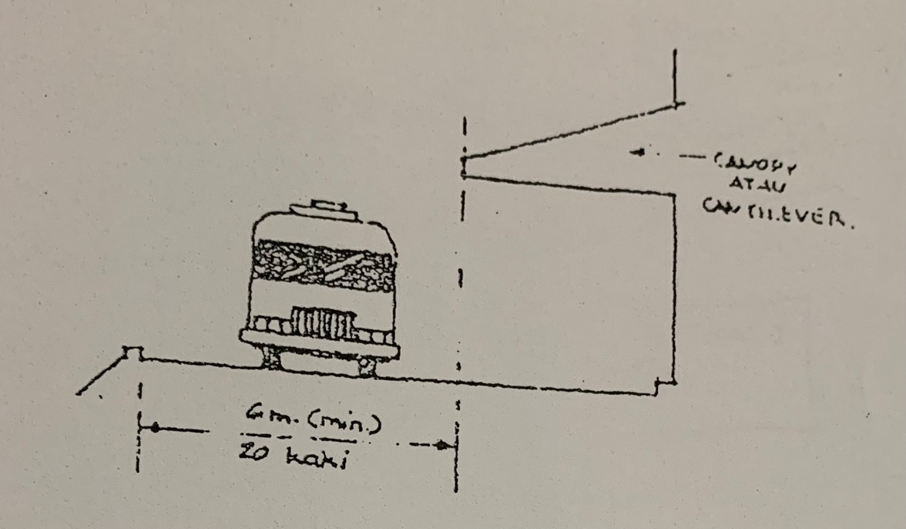
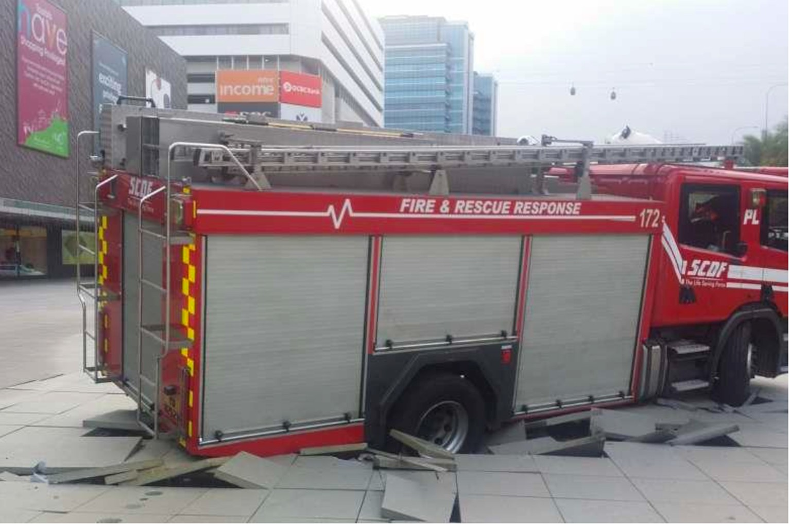
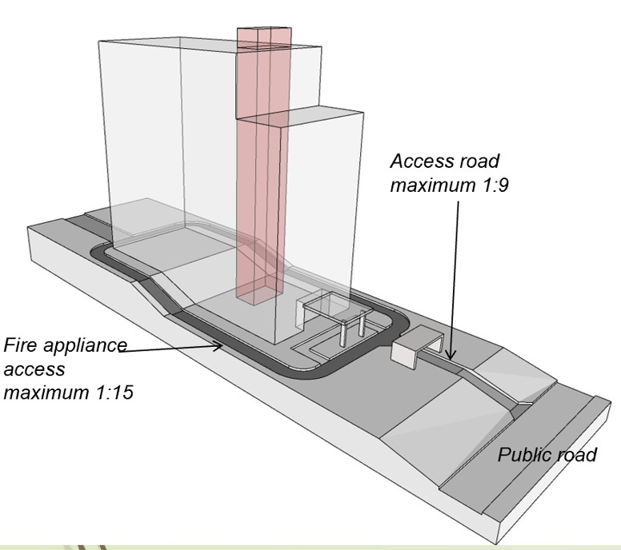
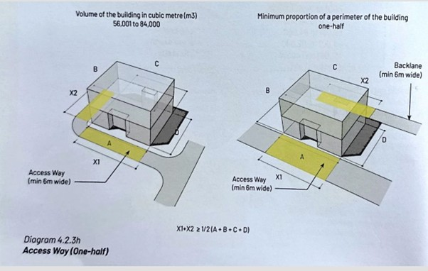
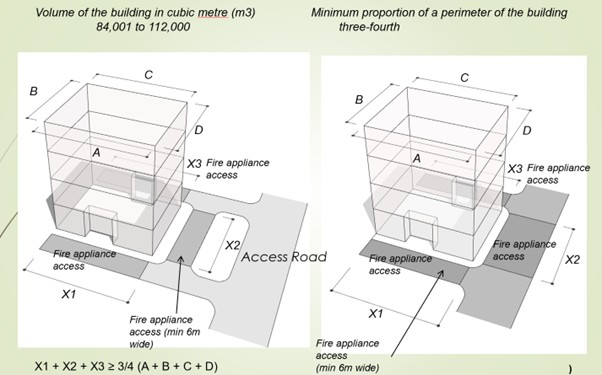
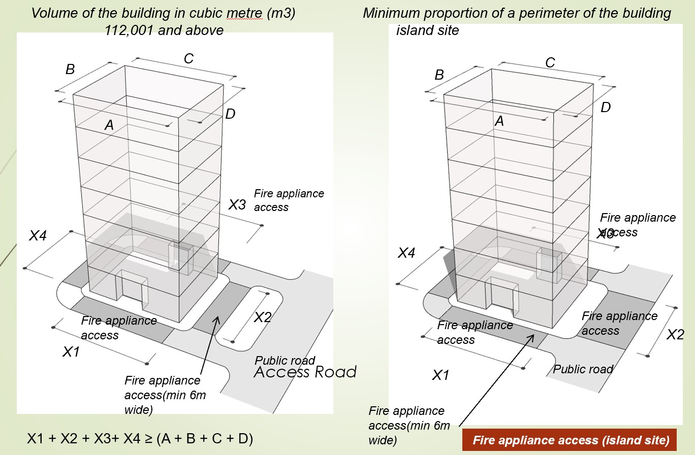
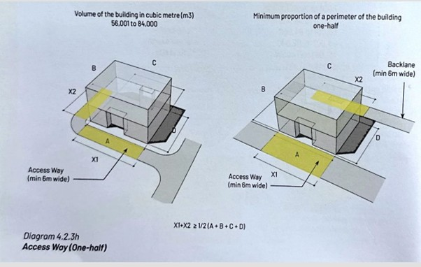
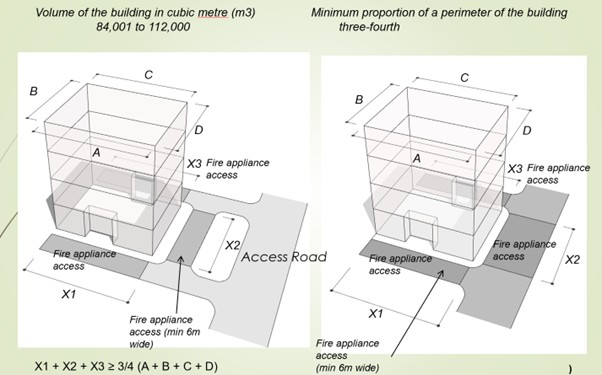
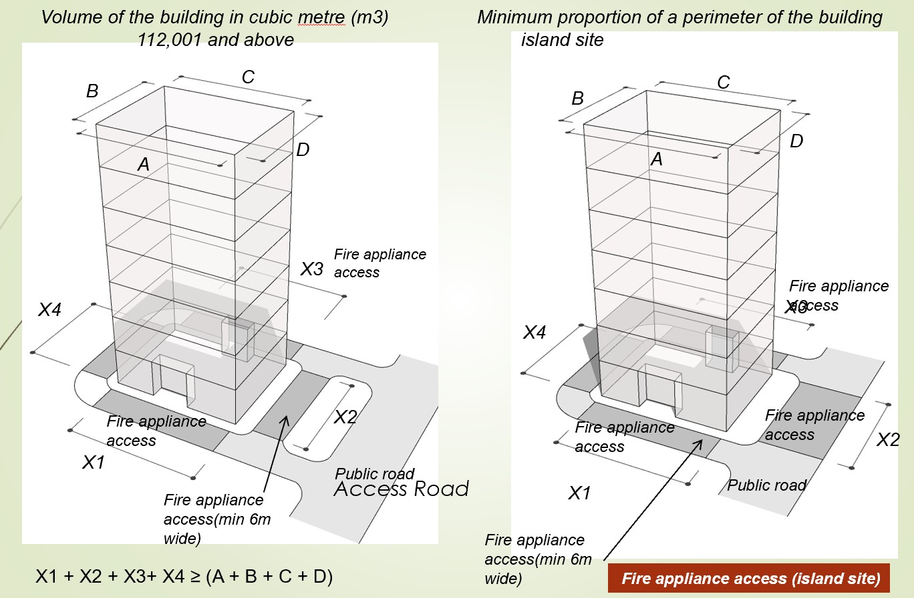

Akses Bomba
Secara umumnya akses bomba terbahagi kepada dua jenis iaitu Akses Perkakas Bomba dan Lobi Akses Menentang Kebakaran. Kedua-dua Akses Perkakas Bomba dan Lobi Akses Menentang Kebakaran adalah dua peringkat akses berbeza yang penting untuk operasi bomba, tetapi ia terletak di lokasi yang berbeza dan mempunyai fungsi yang berasingan. Kedua-dua jenis akses ini memenuhi keperluan operasi bomba yang berbeza, iaitu:
- Akses Luar Bangunan (Akses Perkakas Bomba)
- Akses Dalam Bangunan (Lobi Akses Menentang Kebakaran)
Paras Akses Perkakas Bomba
Menurut UUK 133, "paras akses perkakas bomba" ertinya di mana perkakas bomba boleh menghampiri bangunan itu bagi maksud menentang kebakaran atau memindahkan penduduk.
Tafsiran ringkas ini membawa maksud yang sangat penting dalam reka bentuk keselamatan kebakaran bangunan di Malaysia:
-
Titik Akses Jentera Bomba (Luaran)
Ia merujuk kepada paras permukaan tanah atau jalan yang direka bentuk khas dan diperkuat untuk membolehkan jentera bomba yang berat (seperti lori tangki, lori tangga, atau hydraulic platform) mendekat dan mengambil posisi berhampiran bangunan.
-
Tujuan Operasi Bomba
Tafsiran ini secara jelas menyatakan dua tujuan utama bagi akses tersebut:
- Menentang Kebakaran: Membolehkan anggota bomba menyambung hos mereka ke pancur (riser) bangunan melalui Inlet Penyambung Bomba (Breaching Inlet) yang selalunya terletak pada paras ini, atau untuk mengarahkan pancutan air terus ke dalam bukaan kebakaran (jika boleh dicapai).
- Memindahkan Penduduk: Membolehkan perkakas bomba (seperti tangga turntable atau platform hidraulik) digunakan untuk menyelamat dan memindahkan orang dari tingkat atas bangunan.
-
Paras Rujukan Ketinggian (Datum)
Paras Akses Perkakas Bomba ini amat penting kerana ia bertindak sebagai paras datum (paras 0 meter) untuk menentukan keperluan sistem keselamatan kebakaran dalaman yang lain, terutamanya untuk bangunan tinggi.
Contohnya:- Lubong Menentang Kebakaran (Fire Fighting Shaft): Wajib jika tingkat tertinggi yang diduduki melebihi 18 meter di atas paras akses perkakas bomba ini.
- Sistem Pancur Kering (Dry Riser): Wajib jika tingkat paling atas yang diduduki lebih daripada 18 meter tetapi kurang daripada 30 meter di atas paras akses ini.
- Sistem Pancur Basah (Wet Riser): Wajib jika tingkat paling tinggi yang diduduki adalah lebih daripada 30 meter di atas paras akses ini.
Oleh itu, "Paras Akses Perkakas Bomba" bukan sekadar titik masuk, tetapi merupakan paras kritikal yang menjadi asas untuk menentukan hampir keseluruhan keperluan sistem aktif dan pasif menentang kebakaran bagi sesebuah bangunan.
Akses Perkakas Bomba
Akses Perkakas Bomba merujuk kepada kemudahan di luar bangunan yang membolehkan jentera (kenderaan atau perkakas) bomba sampai ke tapak bangunan dan beroperasi dengan berkesan.
UUK 140 bertujuan untuk memastikan Jabatan Bomba dan Penyelamat Malaysia (JBPM) mempunyai laluan yang mencukupi, kukuh, dan berkesan untuk membawa jentera berat mereka (seperti lori bomba, tangga hidraulik, dan platform putar) ke bangunan bagi tujuan memadam kebakaran dan operasi menyelamat.
Berikut adalah penerangan terperinci mengenai UUK 140, berdasarkan peruntukan asal dan pindaan-pindaan yang berlaku:
1. Keperluan Asas (Isipadu Bangunan)
Peruntukan asal dan pindaan UUK 140 menetapkan bahawa keperluan Akses Perkakas Bomba ini adalah mandatori bagi bangunan yang mempunyai isipadu (volume) yang besar.
- Semua bangunan yang melebihi 7,000 meter padu dikehendaki menyediakan Akses Perkakas Bomba.
2. Spesifikasi Laluan (Akses Perkakas Bomba)
Akses Perkakas Bomba (yang merupakan laluan yang terletak di dalam tapak bangunan) mesti mematuhi spesifikasi geometri dan struktur yang telah ditetapkan. Lebar minimum bagi akses perkakas bomba ialah 6 meter di sepanjang laluannya. Ini bagi membolehkan kemasukan dan pengendalian jentera bomba dan peralatan menaikkan tangga tambahan.
Dari segi kekuatan akses perkakas bomba, ianya mestilah mampu menampung muatan beban perkakas bomba seberat 30 tan. Jika keperluan ini tidak dipatuhi, berkemungkinan besar jentera bomba boleh terbenam.
Bagi memastikan jentera bomba dapat bergerak dan beroperasi dengan selamat, kecerun maksimum yang dibenarkan hendaklah tidak melebihi 1:15. Sebelum pindaan UBBL tahun 2021, kecerunan maksimum yang dibenarkan ialah 1:12 sahaja. Kecerunan jalan masuk ke akses perkakas bomba ialah 1:9.
Lebar minima akses perkakas bomba tidak boleh dikira bermula dari dinding bangunan. Bahagian tepi akses yang paling dekat mestilah tidak kurang daripada 2 meter dan tidak lebih daripada 10 meter dari pusat bukaan akses ke bangunan. Ini bagi mengoptimumkan kedudukan jentera untuk operasi tangga dan penyelamat luar.
Bagi kelegaan laluan pula, ketinggiannya tidak boleh kurang 4.5 meter. Jika sesebuah bangunan hendak mengadakan pintu gerbang sebelum masuk ke akses perkakas bomba. Minima ketinggiannya mestilah tidak boleh kurang 4.5 meter.
Bagi perumahan ‘guard and guarded’ pula, terdapat garis panduan yang perlu dipatuhi.

Jika laluan akses adalah jalan mati (cul-de-sac) yang melebihi 46 meter panjang, ia perlu disediakan tempat berpatah balik (turning area) yang mencukupi. Ini bagi membolehkan jentera berundur atau berpusing dengan mudah. Jenis-jenis reka bentuk kemudahan pusingan (turning facilities) adalah penting untuk Akses Perkakas Bomba di jalan mati (dead-end) bagi memastikan jentera bomba mempunyai ruang yang mencukupi untuk bermanuver dan berpatah balik.
Ini adalah tiga jenis reka bentuk pusingan yang umum digunakan:
- Circle (Bulatan): Merupakan kawasan berbentuk bulatan di hujung jalan mati, membenarkan jentera bomba memandu dalam bulatan untuk berpatah balik.
- Hammerhead: Merupakan kawasan berbentuk 'T' atau 'L' yang membenarkan jentera bomba bergerak ke hadapan, kemudian membuat tiga titik pusingan untuk berpatah balik.
- Shunt: Merupakan kawasan selebar lebih daripada 4 meter, yang memanjang di tepi jalan mati, membenarkan jentera bomba mengundur masuk ke lorong ini dan kemudian bergerak ke hadapan keluar dari jalan.
Semua jenis pusingan ini direka bentuk untuk menampung ciri kebolehgerakan (manoeuvrability characteristics) jentera bomba yang sesuai. Lebar minimum laluan yang digunakan untuk pusingan hendaklah 6 meter.

Akses Sempadan (Perimeter Bangunan)
Bangunan yang melebihi 7,001 m3 mestilah bersempadan dengan jalan, lebuh, atau kawasan terbuka yang tidak kurang daripada 12 meter lebar dan boleh dimasuki oleh perkakas bomba.
Kadar perimeter bangunan yang perlu bersempadan dengan laluan akses ini ditetapkan mengikut skala isipadu bangunan:
| Isipadu Bangunan (m3) | Kadar Minimum Perimeter Bangunan |
|---|---|
| 7,001 hingga 28,000 | Satu perenam (1/6) |
| 28,001 hingga 56,000 | Satu perempat (1/4) |
| 56,001 hingga 84,000 | Setengah (1/2) |
| 84,001 hingga 112,000 | Tiga suku (3/4) |
| 112,001 dan ke atas | Tapak Pulau (Island Site - kesemua perimeter) |
 




